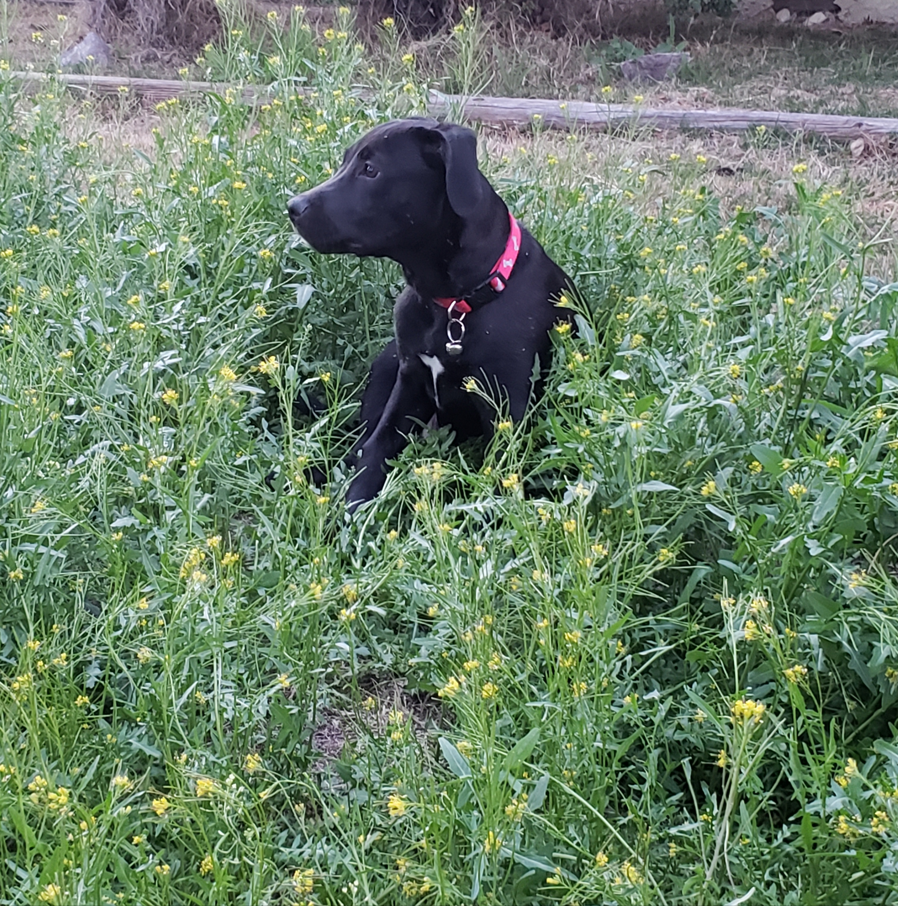
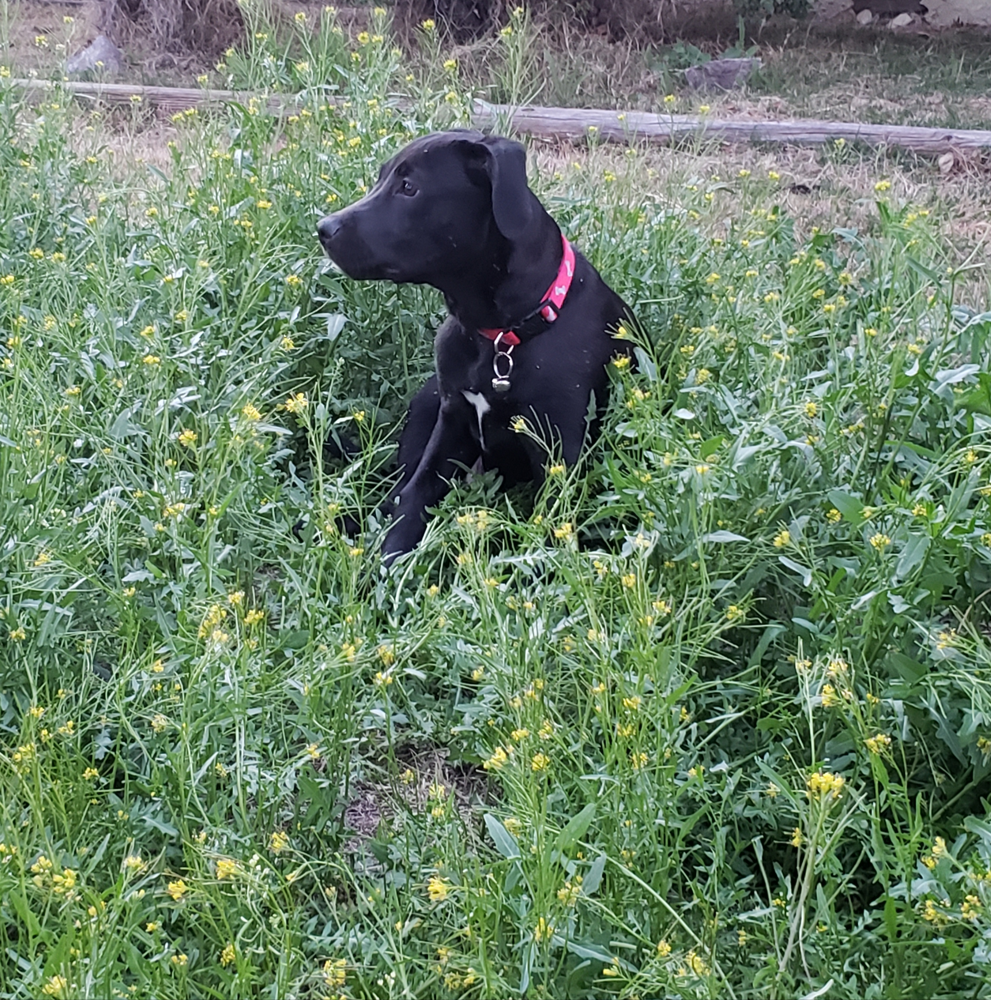

Art & Drawing
Beginning of learning of Art
I have a lot of hobbies and tend to dabble in many different things. One of the hobbies I started was Art. I started drawing in elementary and middle school, creating random sketches. As I improved, I continued drawing into high school and early college, but eventually, I slowed down and almost stopped entirely. Though I still practice occasionally, it’s not as frequent as before. Looking back, I can see how much my skills have developed.

Art Experiment & Learning Techniques
In the beginning, I used basic pencil outlines before switching to pen for cleaner linework. I colored my drawings with standard colored pencils, but I didn’t understand shading or blending. As I progressed, I started incorporating more depth into my art, practicing shading and blending techniques with my favorite anime characters. Eventually, I explored charcoal and a bit of painting. However, I lost motivation and took a break from art until I decided to dabble in it again in college.


Photography & Graphic Design
During the time I wasn’t drawing, I got into hiking and photography. I enjoyed capturing landscapes and occasionally took pictures of people during interesting events. I started editing my photos, which led me to experiment with graphic design and crocheting in college, though I haven’t pursued it seriously.
 


This is some of the digit art that I did during college. I did some picture of peole and I started to make and seel crotchet animals for fun. I had a lot of free in the beginning of college because of covid. So during my free time I started to created and seel crocheting item that people like. This was a way I made a side business this time and sell some of the stuff animal that I wanted to created that I didn't have room to place them.